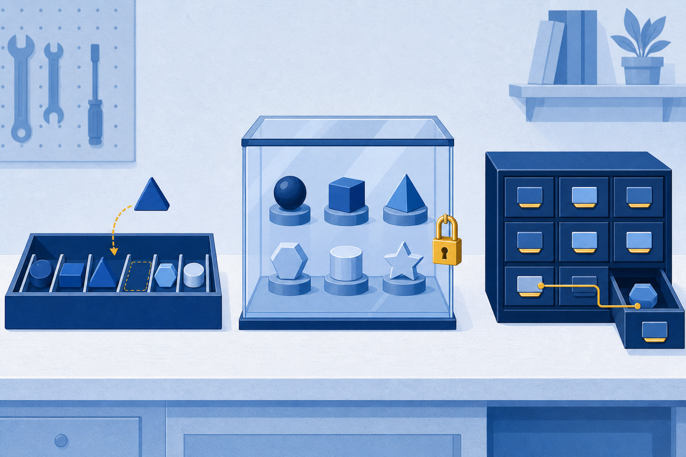
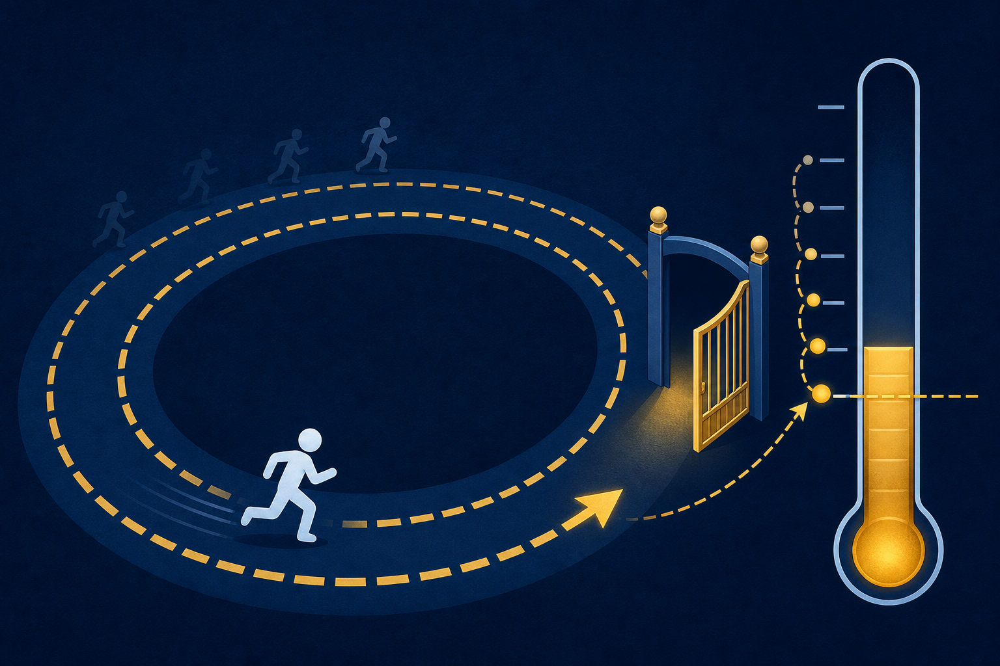
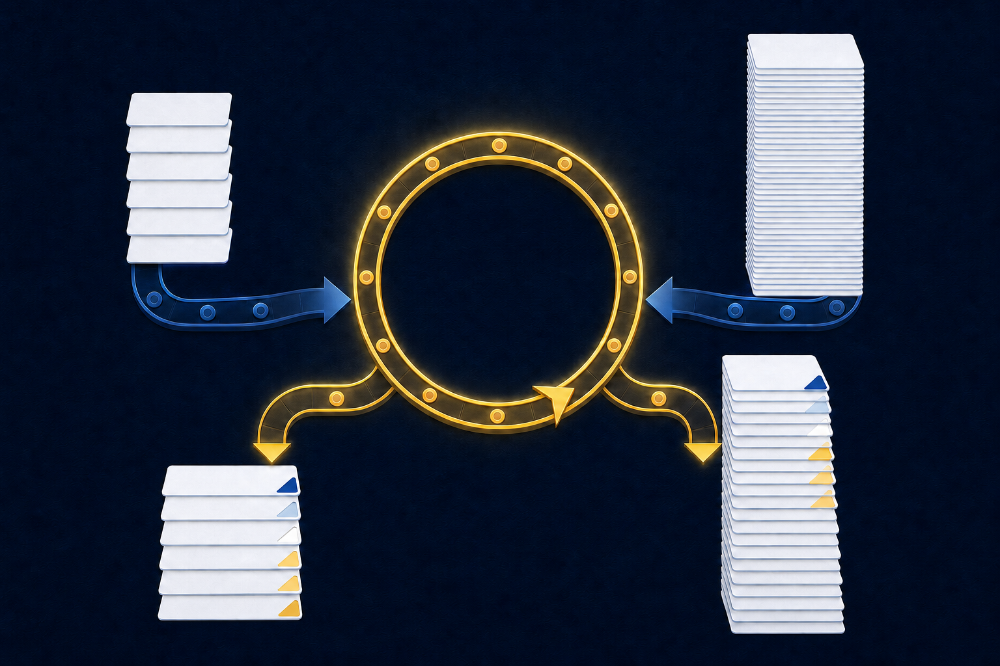

01
Store
Choose lists, tuples, or dictionaries to match the shape of your data.
Data structures and control flow: lists, tuples, dictionaries, decisions, and loops.
Start here: Which line of code have you run this semester that worked, though you could not say why?
Choose lists, tuples, or dictionaries to match the shape of your data.
Branch with if, elif, and else so code responds to what it sees.
Loop with for and while, then fold a loop into a comprehension.

Ordered and changeable. The everyday workhorse.
Ordered and locked. For values that must not change.
Labeled. You look values up by key, not by position.
The bracket shape tells you what you are reading before you read a single value.
temperatures[2] = 70 # replace by index temperatures.append(73) # add to the end temperatures.remove(75) # drop the first 75
Mutable means the list itself changes. No copy is made. Tab completion after the dot shows the full set.
scores = [85, 92, 78, 90, 88] scores.append(95) scores[1] = 93 print(scores[2:5])
Commit: Write down exactly what prints before you see the answer.
[78, 90, 88]. The list becomes [85, 93, 78, 90, 88, 95], and the slice keeps positions 2, 3, and 4. The stop index 5 is excluded.red_color = (255, 0, 0)
red_color[0] = 200
TypeError: 'tuple' object does not
support item assignment
Reading works like a list. Writing raises the error, on purpose.
patient['name'] # 'Imani Johnson' patient.get('blood_pressure', 'Not recorded') # 'Not recorded'
.get() returns a fallback, not an error.
patient['blood_type'] = 'Type A' # add patient['age'] = 35 # update del patient['blood_type'] # remove if 'age' in patient: print(patient['age'])
Check membership with in before you read. The views feed the loops coming up next.
Daily temperature readings, with one more added every morning.
The fixed latitude and longitude of a weather sensor.
One customer’s name, email, and plan level.
if temperature > 100.4: print("Fever detected") print("Reading checked")
A test that is true or false, ending with a colon.
Runs only when the test is true. Indentation is the grammar.
Unindented code runs either way.
With score = 85, Python runs one block and skips the rest. Order your checks from strict to loose.
== compares. = assigns. Mixing them up is the classic beginner bug.
age > 40 and bp > 140 needs both to be true. or needs one. not flips the answer.
for temp in temperatures: print(f"{temp}°F")
98.6°F
99.1°F
100.2°F
range(start, stop, step)The stop is excluded. Slicing taught you this rule already.
.items()for key, value in patient.items(): print(f"{key}: {value}")
The loop receives each key and its value together.
while temperature > 100.4: print("cooling...") temperature -= 0.5 # stops at 100.0°F
The body has to push the condition toward false. Drop the temperature -= 0.5 line and the loop runs forever.
for fits a known collection. while fits an unknown count.

break ends the loopif temp > 100.4: print("Critical found") break
Stop scanning the moment you find what you came for.
continue skips one itemif temp > 100.4: continue print(f"Valid: {temp}")
Pass over this item and keep the loop moving.
for p in patients: if p['age'] >= 65 or p['temperature'] > 100.4: print(f"{p['name']}: Priority assessment needed") else: print(f"{p['name']}: Standard screening")
| name | age | temperature |
|---|---|---|
| Imani | 25 | 98.6 |
| Mei | 67 | 103.2 |
| Malik | 45 | 97.8 |
Commit: Predict the printed line for each of the three patients.
or needs only one. Malik: Standard screening. He misses both.high_temps = [] for temp in temperatures: if temp > 100.0: high_temps.append(temp)
high_temps = [temp for temp in temperatures if temp > 100.0]
When the logic stops fitting on one readable line, return to the loop.
Hand-make lists and a dictionary for six students.
Load all 55 students with read_csv and .tolist().
Class average, letter grades, and the distribution.
Comprehensions, max() and min(), and a bar chart.
A 100-150 word summary for your instructor.
Your Part 1 code never asks how long the list is. That is why it grades 6 students or 55, untouched.
Which container fits a fixed GPS point, and why?
Why must score >= 90 come before score >= 80 in the ladder?
What does [n * 2 for n in nums if n % 2 == 0] keep, and what does it change?

Next step: Open Skills Lab 3A. In Chapter 4, DataFrames build on the lists and dictionaries you now own.